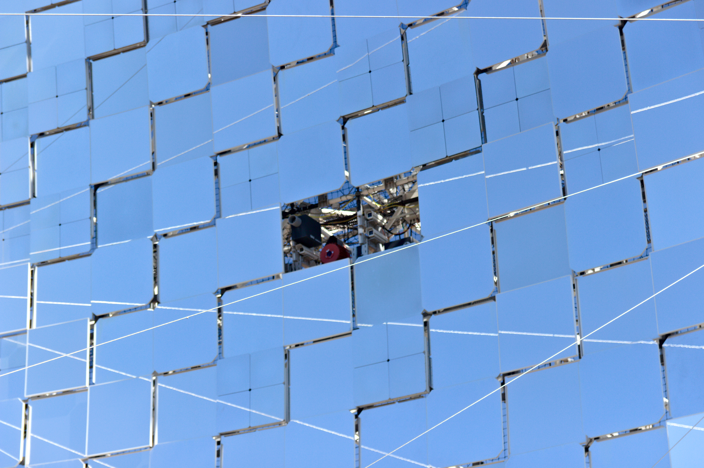
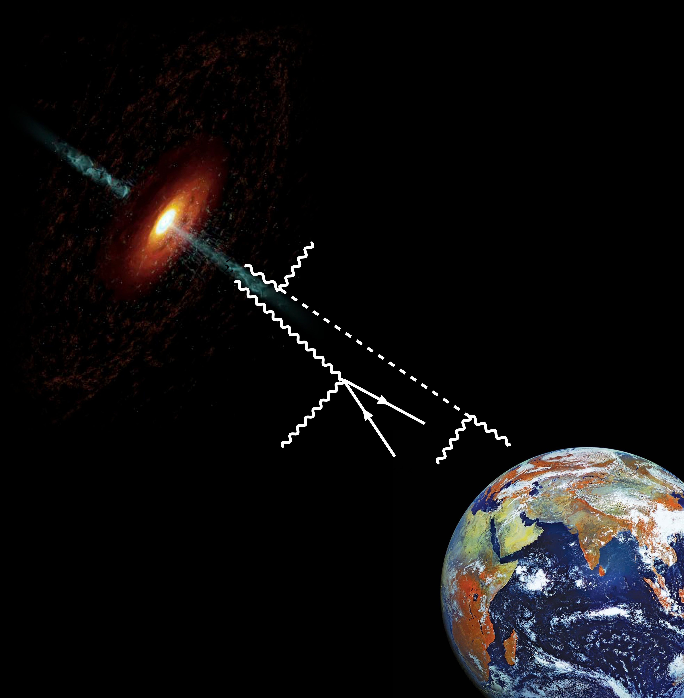

Education and research
I was born in Bari, Italy, where I went to school and got my Bachelor's degree in Physics in 2018.
I later went on to study Theoretical Physics at the same University, where I got my Master's degree in 2021.
The topic of my Master's thesis was a study on the cosmological signatures of the production of axion-like
particles and other light bosons (such as gravitons) from the Hawking evaporation of primordial black holes.
You can read the paper that came out of my thesis work here.
In 2023 I started a PhD in Bari on gamma-ray astrophysics with ground-based telescopes
and the Cherenkov Telescope Array Observatory (CTAO), which I obtained in 2026 by defending my thesis
Present and future constraints on axion-like particles from blazars: from current gamma-ray telescopes to the
Cherenkov Telescope Array Observatory (available here).
I am currently a research fellow at INFN Bari, working on Fermi-LAT data analysis and modelling of the Galactic
diffuse gamma-ray emission due to the interactions of charged cosmic rays with the interstellar medium.
Cherenkov telescopes

Highly energetic gamma rays coming from outer space do not reach the surface of the Earth, as they are
absorbed by interactions with the atmosphere, resulting in relativistic cascades of lower-energy charged
particles (typically electron and positrons) and photons. While this is a good thing for life as we know it,
it makes it difficult to directly measure gamma rays at ground level. One of the ways to overcome this problem
is the use of imaging atmospheric Cherenkov telescopes (IACTs), which use very large mirrors and ultra-fast
imaging detectors to measure the blue-UV Cherenkov light flashes emitted by the particles in the shower.
Machine-learning algorithms are then used to classify the images of the showers based on their shapes to determine
the kind of particle that generated the shower as well as its energy and direction.
The MAGIC telescopes and the Large-Sized Telescopes (LSTs) of the upcoming CTAO-North, located at the Observatorio
del Roque de los Muchachos on La Palma, in the Canary Islands, are examples of IACTs. During my PhD, I have had the
privilege of spending several months in La Palma operating LST-1 and MAGIC, as well as being involved
in the construction activities for LST-South.
Blazars
Gamma rays from outside our galaxy can be produced in the relativistic jets of active galactic nuclei (AGNs). These are thought to be supermassive black holes located at the centers of distant galaxies, whose accretion mechanisms create enormous outflows of charged particles moving at relativistic speeds. When these jets are aligned with the line of sight to Earth, the originating AGNs is called a blazar. It turns out that almost all known, non-transient extragalactic gamma-ray sources are blazars, characterised by huge luminosity and variability due to relativistic beaming effects.
Axion-like particles

Axion-like particles (ALPs) are a class of hypothetical particles derived from the original axion model, proposed in the '70s in
the context of quantum chromodynamics. (How the axion got its name from a laundry detergent is
quite a funny story.) Over time,
ALPs have found applications in several extensions of the Standard Model, notably in string theory, and have been identified
as a promising candidate as constituents of dark matter.
My primary area of expertise during my PhD has been the astrophysical search of ALPs, with a
focus on gamma-ray observations of blazars performed by IACTs. I have been both analysing real data from existing telescopes (MAGIC,
LST-1) and performing simulations of future CTAO observations to assess the regions of the ALP parameter space that
can be constrained by different observations.
I am interested in determining what the most promising sources are for such observations, as well as exploring
alternative analysis methods to provide better constraints. You can read some of my recent work about this
here.
Curriculum vitae
You can download my full academic CV in PDF format here. A short version is available here.